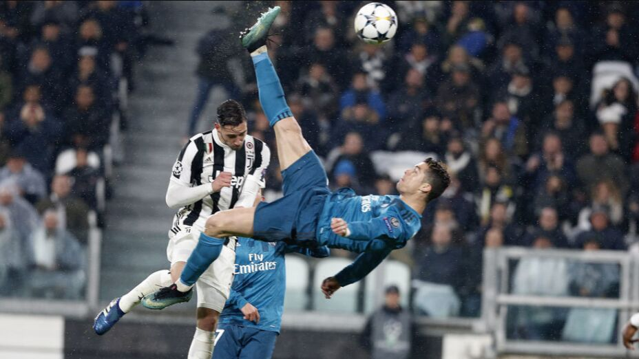

NOTICIAS DE CR7
Cristiano Ronaldo volvió a ser determinante para la clasificación de su equipo, Al Nassr, a la final de la Liga de Campeones de clubes árabes al marcar de penal el gol de la victoria por 1-0 ante Al-Shorta de Irak en el Prince Sultan bin Abdul Aziz Stadium de Arabia Saudita.

Aqui encontraras mas noticias
Quién sabe si el detonante para soñar en grande fue el hecho de haber noqueado en el arranque del Mundial de Qatar, contra todo pronóstico y causando sensación, al futuro campeón. El caso es que el fútbol de élite ha aterrizado en Arabia Saudí y da toda la impresión que para quedarse.
Go somewhereLas mejores jugadas del bicho
Con el Mancherster United, Real Madrid o la selección de Portugal, Cristiano Ronaldo ha dejado huellas imborrables en nuestras retinas con sus mejores goles como los que aquí te traemos y que lo mantienen como uno de los mejores futbolistas de todos los tiempos, sin importar que ahora juegue en el Al Nassr de Arabia Saudita aun sigue es el emjor .
Go somewhereCR7 VOLVIO HACER RECOR
El astro portugués de 38 años anotó al minuto 75 un fuerte disparo que descolocó al arquero Ahmed Basil y realizó su clásico festejo para dejar al club saudí a un paso de un título. Además, el Bicho metió a Al Nassr en la final del certamen internacional por primera vez en 41 años de historia. “Ronaldo con su asombrosa técnica. Gran esfuerzo, ahora un paso más”, describieron en las cuentas oficiales de Al Nassr el momento del gol de la victoria y el resultado final que deja al club en la puertas de la gloria. En el encuentro, del cual participaron desde el arranque los refuerzos de élite como Sadio Mané, Seko Fofana, Marcelo Brozovic y Alex Telles, tuvo otra conquista de CR7 a los 30 minutos de juego, pero fue anulada por una fina posición adelantada que se discutió largo y tendido.